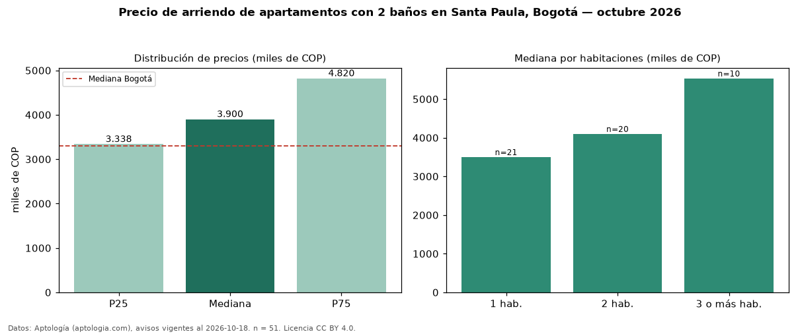

Precio de arriendo de apartamentos con 2 baños en Santa Paula, Bogotá — octubre 2026
Con 51 avisos vigentes, el canon mediano de apartamentos con 2 baños en arriendo en Santa Paula (localidad de Usaquén), Bogotá es COP 3,90 millones al mes. Frente a la mediana de todos los apartamentos en arriendo de Santa Paula (COP 5,00 millones, n = 133), queda 22 % por debajo; este segmento reúne el 38 % de esos avisos. Por metro cuadrado, la mediana es COP 57.044/m² al mes (n = 50), 0 % por debajo del conjunto de referencia (COP 57.080/m²). El área mediana anunciada es 68 m². El segmento con más oferta es el de 1 habitación (21 avisos, mediana COP 3,50 millones); pasar de 1 habitación a 3 o más habitaciones cambia la mediana +58 %. La administración mediana declarada es COP 665.000 al mes (n = 33), aparte del canon. El estrato más frecuente es 6 (78 % de los avisos con estrato). La mediana de todos los apartamentos en arriendo de Bogotá es COP 3,30 millones (+18 % de diferencia). Datos: Aptología (aptologia.com), CC BY 4.0 — https://www.aptologia.com/arriendo/bogota/santa-paula. Archivos: PDF, CSV con las cifras y gráfica PNG.

| Avisos únicos | 51 |
|---|---|
| Percentil 25 | COP 3.337.500 |
| Mediana | COP 3.900.000 |
| Percentil 75 | COP 4.820.000 |
| Mediana por m² | COP 57.043 |
Fuente: avisos vigentes de portales inmobiliarios recopilados por Aptología, deduplicados (mínimo 30 avisos únicos por celda). Precios pedidos, no cerrados. Fecha: 2026-10-18.